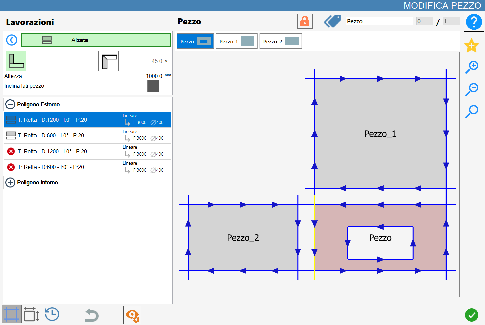
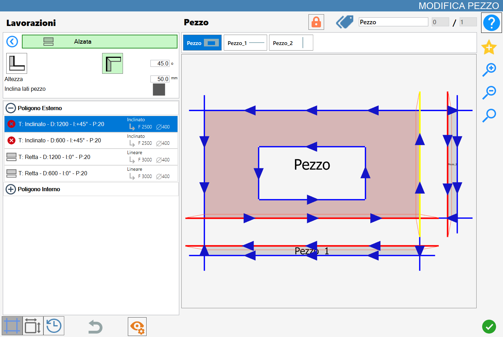
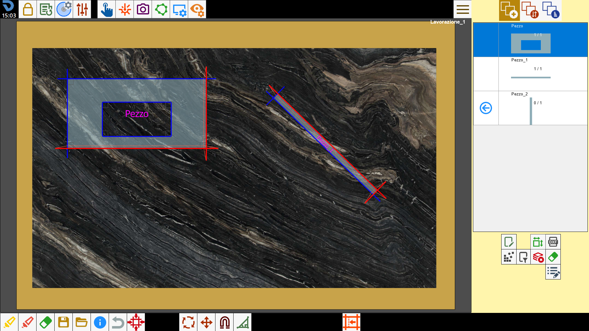

Questa funzione permette di creare un pezzo rettangolare a partire dal lato di un oggetto, in modo da ottenere un’alzata.

Tipologie di lavorazione
Per utilizzare questa lavorazione, occorre innanzitutto scegliere una delle due modalità disponibili, selezionando il pulsante corrispondente:
 | Modalità Rivestimento |
 | Modalità Alzata |
Parametri
Altezza | Altezza dell’alzatina che verrà inserita durante l’esecuzione della lavorazione. |
Inclina lati pezzo | Se abilitato inserisce automaticamente tagli inclinati nell’eventualità di tagli che colliderebbero. |
Parametro aggiuntivo modalità alzata
Gradi | Questo parametro è attivo solo quando la modalità Rivestimento è selezionata. |
Esecuzione della lavorazione
È possibile applicare la lavorazione premendo il pulsante a sinistra del taglio opportuno nella lista dei poligoni.
Un’icona rossa con una 'X' indica che la lavorazione non può essere applicata al taglio desiderato.
Cliccando direttamente sul taglio nell’anteprima, oppure sull’icona a sinistra del taglio nella relativa lista sul lato sinistro quando possibile, verrà eseguita la lavorazione selezionata.
A ogni alzata o raccordo applicato con successo nel materiale corrisponde l’aggiornamento dell’anteprima e della lista dei tagli sulla sinistra.
Ogni pezzo creato con questa funzionalità verrà aggiunto nella lista dei pezzi di Parametrix.
I nuovi pezzi introdotti inoltre, verranno aggiunti in una lista collocata appena sopra l’anteprima nel pannello ‘Modifica Pezzo’;

Da questa lista è possibile selezionare il pezzo del blocco desiderato per visualizzarne l’anteprima e i relativi tagli nella lista dei tagli.
Esecuzione di Rivestimento
Viene ora mostrata l’applicazione di due rivestimenti nel caso in cui il parametro “Inclina lati pezzo“ sia abilitato o disabilitato.
Viene dapprima applicato un rivestimento di altezza 1000 mm sul lato inferiore del rettangolo e successivamente un secondo rivestimento sul lato destro dello stesso.
Inclina lati pezzo disabilitato
Non compaiono lati inclinati nel risultato ottenuto e i tagli del pezzo originale non vengono modificati nella lista dei tagli:

Inclina lati pezzo abilitato
In caso di allineamento vertici dei nuovi pezzi ovvero Pezzo_1 e Pezzo_2, verranno sostituiti i lati con il vertice in comune non adiacenti al pezzo originale e sostituiti con tagli inclinati:

Esecuzione di Alzata
Viene ora mostrata l’applicazione di due alzate nel caso in cui il parametro “Inclina lati pezzo“ sia abilitato o disabilitato.
Viene dapprima applicata una alzata di altezza 50 mm sul lato inferiore del rettangolo e successivamente una seconda alzata sul lato destro dello stesso.
In questa modalità, il pezzo originale (Pezzo) e ciascun eventuale pezzo generato (Pezzo_1 e Pezzo_2) avranno automaticamente applicati tagli inclinati su tutti i lati che risultano adiacenti tra loro.
L’angolo dell’inclinazione è determinato dal parametro gradi.
Inclina lati pezzo disabilitato
In questo caso i lati adiacenti tra il pezzo originale e i nuovi pezzi creati vengono automaticamente sostituiti da tagli inclinati.
L’inclinazione del taglio dipende dal parametro Gradi impostato.

Inclina lati pezzo abilitato
Come nel caso precedente vengono inseriti tagli inclinati nei tagli adiacenti ai vari pezzi e l’inclinazione dipende in base al valore del parametro Gradi.
Inoltre, attivando il parametro “Inclina lati pezzo”, come nel caso dei rivestimenti, se i nuovi pezzi presentano un allineamento dei vertici, i lati con vertice in comune, non adiacenti al pezzo originale, vengono automaticamente sostituiti con tagli inclinati.

Divisione dei pezzi
Quando al pezzo selezionato sono stati associati uno o più pezzi tramite lavorazioni di Alzata o Rivestimento, compare nella parte superiore del pannello “Modifica Pezzo” un pulsante specifico per la gestione dei pezzi associati.
Dividi pezzi |
Prima della divisione, i pezzi associati vengono gestiti in modo unificato all'interno dell’area di lavoro. In questo stato, si crea un blocco composto da più elementi che subiranno le medesime operazioni, senza essere ancora suddivisi.
Ad esempio, quando il pezzo originale o un’alzata o un rivestimento viene aggiunto all’area di lavoro dalla lista dei pezzi, anche tutti gli altri elementi associati vengono automaticamente inseriti.

Alla pressione del pulsante Dividi Pezzi, ogni pezzo generato tramite alzata o rivestimento verrà dissociato dal pezzo originale e trattato come elemento indipendente.
Successivamente, sia la lista dei pezzi associati, precedentemente visibile sopra l’anteprima nel pannello Modifica Pezzo, sia il pulsante per la divisione dei pezzi scompariranno dall’interfaccia.
Al momento della divisione, ogni pezzo mantiene i tagli inclinati ottenuti durante la generazione tramite alzata o rivestimento, oltre a tutte le personalizzazioni e modifiche effettuate mentre era ancora associato al pezzo originale.
Nell’immagine che segue è possibile osservare la gestione diversificata dei singoli pezzi precedentemente appartenenti allo stesso blocco.
In particolare sono stati inseriti nell’area di lavoro solo due dei tre pezzi (il pezzo originale e il primo pezzo generato dall’applicazione della prima alzata), e il secondo pezzo è stato ricollocato e ruotato senza aver innescato alcuna interferenza al pezzo originale:
